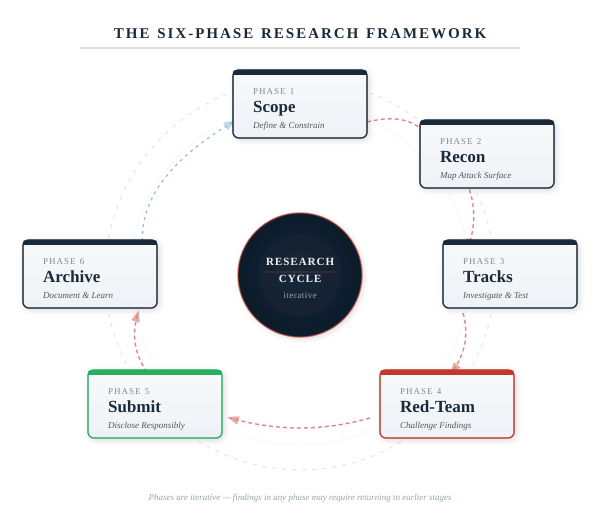
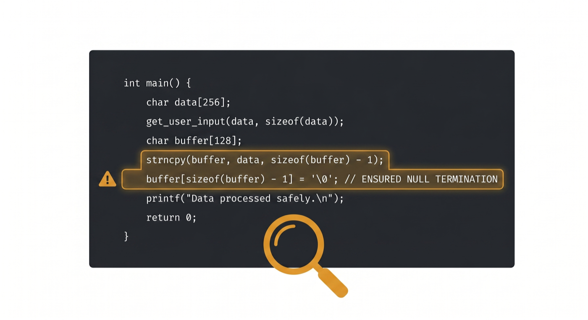
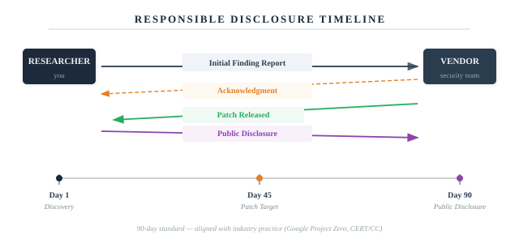

Stuart Paul Thomas
Vulnerability discovery, responsible disclosure,
and the methodology behind thirty-five years of practice
DOI: 10.5281/zenodo.19855016 · ORCID: 0009-0008-4518-0064
To Rob.
First, because that's where it belongs.
For being there before the work, during the work,
and through everything in between.
And to everyone who has ever found a bug and chosen to report it responsibly.
You make the internet safer, even when nobody knows your name.
Security research is a peculiar discipline. It sits at the intersection of deep technical craft and human responsibility. You need to understand code at the level of individual bytes, but you also need to understand the implications of what you find for real people relying on real systems.
The researcher you're about to learn from brings both perspectives. Twenty years of hands-on work with systems, network protocols, cryptography, and kernel code. But also twenty years of thinking carefully about when, how, and whether to share what you've found.
This book doesn't teach you how to be clever. It teaches you how to be rigorous. How to think systematically about systems. How to verify your assumptions. How to be trustworthy when you find something real.
That matters more than cleverness. In our field, trustworthiness is currency.
Read this book. Learn the framework. Practise it. Then go find real vulnerabilities and fix them responsibly.
The internet is safer when researchers like this exist.
Stuart Paul Thomas is an information security professional with 35+ years of experience in systems engineering, network security, cryptography, and security research. His career spans roles in government, financial services, transportation, telecommunications, and technology sectors.
He started in computing at the age of eleven, in 1987, when he fixed a retired teacher's Commodore PET and its printer. The fee was £5. He has been doing much the same thing — looking at how computers actually work, rather than how they're supposed to work — ever since. His first professional IT role was at University College Scarborough in 1994, where he did everything: helpdesk, trainer, technical support, and website developer. He has not stopped since.
His security research has identified vulnerabilities across multiple platforms and has led to coordinated disclosures with major technology vendors. His work emphasises responsible disclosure practices and ethical security research methodology.
Beyond technical work, Thomas brings experience in leadership and management of security teams, security policy development and compliance, regulatory frameworks (GDPR, data protection, compliance standards), training and mentoring of security professionals, vulnerability assessment and penetration testing, kernel-level security analysis (Unix, Linux, macOS), cryptographic systems and protocols, and network architecture and protocols.
This book represents a synthesis of practical experience across multiple platforms and organisations, distilled into a reusable, proven methodology for security research.
For security research questions or methodology inquiries: stuartpaulthomas@gmail.com
This book is the product of thirty-nine years of curiosity, and the support of people who made it possible to act on that curiosity without losing myself in the process.
To Rob: first, because that's where it belongs. For being there through everything — the long research nights, the frustrating dead ends, the moments of doubt about whether any of this was worth doing. For the steady presence that asked the right questions at the right times. For understanding, without being told, what this kind of work costs and what it gives back. I have known Rob longer than I have been a professional in this industry. That alone tells you something about what his support means. This book would not exist without him.
To my children: you kept me grounded when the work got abstract. You asked the simple questions that forced me to explain complex things clearly. You reminded me that all of this only matters if it makes the world better for you to inherit. This book exists partly because I wanted to show you that integrity — and doing things the right way, even when it's harder — is always worth it.
To my brothers: for the conversations that kept me sane, for showing up when things were hard, for the laughter and the patience. For understanding that this work consumes me sometimes and never making me feel bad about it.
To my parents: for instilling the values that underpin this entire book. For teaching me that knowledge brings responsibility, and that responsibility means thinking carefully about how you use what you know.
To my friends: for tolerating the long silences when I was deep in research, for listening to security rants nobody asked for, for believing this book was worth writing even when I wasn't sure. For keeping me human.
To the researchers who patiently red-teamed my findings and corrected my reasoning: your feedback made this work defensible. Claude (Anthropic), Gemini (Google), and Grok (xAI) provided invaluable perspective on vulnerability assessment, threat modelling, and editorial review. Their use is disclosed here and in the Legal section as a reasonable adjustment under the Equality Act 2010, s.20. The ideas, the methodology, and the responsibility for the content are entirely mine.
To the vendors who responded professionally to my reports: you showed that coordinated disclosure actually works. Your teams' questions forced me to be more precise. Your patches validated the findings.
To the security community: the researchers who documented their methodology openly, who shared PoC code, who explained not just what they found but how they found it. This book is built on their generosity.
To my colleagues over the years in information security, systems engineering, cryptography, and network operations: you taught me that deep technical expertise requires humility. That systems are complex. That assumptions get violated. That integrity matters more than cleverness.
To everyone managing the intersection of neurodivergence and high-stakes technical work: your existence reminds me that different thinking styles produce different — often valuable — results. That being wired differently doesn't mean being wired wrong.
And to Giles: for pushing me to document this in the first place. For asking the question that started it. Some books need someone to say: write it down. You were that person.
Thank you, all of you.
All techniques, methodologies, and frameworks described in this book must be applied only to computer systems and networks that you own, operate, or have obtained explicit written permission to test from the system owner.
Unauthorised access to computer systems is illegal under the Computer Misuse Act 1990 and equivalent legislation worldwide. The author assumes no responsibility for any illegal use of the information contained in this book.
Before conducting any security research, you must:
This book advocates responsible, coordinated disclosure of security findings. The author strongly encourages the industry-standard 90-day coordinated disclosure timeline:
The author assumes no liability for your interpretation or application of the methodologies described, harm caused by improper or unauthorised application of security research techniques, unauthorised access to computer systems, violation of the Computer Misuse Act 1990 or equivalent legislation, violation of responsible disclosure principles, or any consequence arising from your use of information in this book.
This book provides general educational guidance only. It is not legal advice. For legal interpretation of the Computer Misuse Act 1990, Data Protection Act 2018, GDPR, or other regulations, consult a qualified solicitor.
You are solely responsible for understanding and complying with all applicable laws and regulations in your jurisdiction, obtaining proper authorisation before testing any system, following responsible disclosure principles, and protecting the privacy and rights of system users and owners.
By reading this book, you acknowledge that you understand these responsibilities and agree to comply with all applicable laws and regulations.
Section 20 of the Equality Act 2010 imposes a positive duty to take reasonable steps to avoid substantial disadvantage to disabled persons arising from any provision, criterion, or practice. Where a policy prohibiting or penalising the use of AI tools would place a neurodivergent person at a substantial disadvantage compared to a non-disabled person — for example, by imposing an equivalent cognitive or executive function burden that the disability creates — that policy must be subject to a reasonable adjustment.
The use of AI tools by this author is a documented and declared reasonable adjustment. It does not affect the originality, accuracy, or legal ownership of the work. All substantive content, methodology, findings, and opinions are the intellectual work of the named author. AI tools (Claude, Gemini, Grok) were used for drafting assistance, review, and red-teaming of arguments — functions analogous to a dictation service, an editorial aide, or an assistant reader.
Any publisher, platform, institution, or employer operating a policy that restricts or penalises AI use should note that a blanket restriction, applied without making reasonable adjustments for disabled individuals, may constitute indirect discrimination under Section 19 of the Equality Act 2010, and may separately breach the positive duty to make reasonable adjustments under Section 20.
This position is asserted under English law (England & Wales) in good faith. Any challenge should be made through lawful means.
In accordance with applicable platform and publisher AI disclosure requirements: this work was produced with AI assistance (Claude / Anthropic, Gemini / Google, Grok / xAI) in a drafting, review, and red-team capacity. All substantive content, findings, methodology, and opinions are the original intellectual work of Stuart Paul Thomas. The author is solely responsible for all content in this book.
The view from where this work happens — terminal open, notebook out, tea going cold.
One of the oldest tools in networking. One packet at a time. Decades of lessons about how systems reveal their secrets.
There's a story that never gets old.
In 1983, a graduate student named Mike Muuss at the University of Delaware was debugging a network problem. A gateway between two networks was mysteriously dropping data. No error messages. No obvious cause. The data just vanished into the void, like letters lost in the post.
So Muuss wrote a small programme. It would send an ICMP Echo Request packet to a host and wait for an echo back. A simple question: Are you there? If the host replied, the problem wasn't on that link. He could move down the chain.
He called it PING. Probably because it's the sound a submarine makes to detect something in the water. Or maybe just because it was short and punchy.
Forty years later, every security researcher worth their salt knows that PING reveals things it was never meant to reveal.
When you send a PING, you're asking the operating system to craft a packet. That packet has to conform to RFC 792. But conformity is subjective. Different systems interpret the same specification in different ways. Some are strict. Some are creative. Some are sloppy.
These differences are security research gold.
When you send a malformed PING, you're not just sending random data — you're testing an assumption. The system receives it and has to make a choice: reject it as garbage, try to parse it anyway, or something in between. That choice, replicated millions of times, becomes a fingerprint. It tells you what the OS is. What version it is. What security assumptions it's making about the packet.
And sometimes, if you're lucky, that choice becomes a vulnerability.
This is why a 40-year-old tool still matters in 2026.
I've been doing security work for 35 years. That's a long time to watch networks evolve, operating systems mature, and vulnerabilities get patched. But it's also a long time to notice patterns.
In 2001, I wrote a SANS paper on ICMP crafting. At the time, network filtering was the frontier of security research. We were learning what happened when you broke the rules of RFC 792. My friend Giles encouraged me to document it, to think deeply about what these edge cases meant. He was right to push. That paper went places I didn't expect.
Over the next decade, I worked in cryptography, smart cards, kernel security, privacy, and infrastructure. I helped design NHS standards. I wrote security policies for government networks. I saw firsthand what happens when systems are designed without considering how they'll actually be tested.
Then, about a year ago, I started looking seriously at macOS security from the ground up. Not because macOS is broken, but because it's actually quite well-designed. But every system, no matter how well-designed, makes choices. And those choices are explorable.
What I found surprised me. Not because macOS is uniquely vulnerable, but because the same classes of patterns I saw 20 years ago in ICMP behaviour are still present in modern kernel code. The same asymmetries between specification and implementation. The same categories of boundary condition that reward careful examination. The same moments where the system assumes this will be safe and the researcher says but what if it isn't?
I could have written a book just about vulnerabilities. Here's a bug, here's how to find it, here's how to report it. That would be useful. It would be accurate. It would also be forgettable.
But security research isn't really about finding individual bugs. It's about understanding how systems think. Why they make the choices they make. What those choices reveal about assumptions.
PING is the perfect lens for this. It's old enough to have a history. It's simple enough to understand completely. And it's been modified, ported, and reimplemented enough times that you can watch the same patterns emerge across decades and platforms.
By following PING from 1983 to 2026, we're following a thread through the entire history of operating system design. macOS is just the latest chapter. The methodology is the through-line.
This book has two parts: the story and the methodology.
The story is about ICMP, PING, and why a 40-year-old tool still tells us important things about how modern operating systems work. It's about the history of network security research and how that knowledge applies to finding vulnerabilities today.
The methodology is practical. After you finish this book, you should be able to: understand how to approach an unfamiliar system and find its security boundaries; distinguish between a real vulnerability and an interesting edge case; validate your findings before you submit them; engage with vendors responsibly and professionally; and document your work so others can learn from it.
You'll also learn how to think like a security researcher. Not in the sense of being paranoid or adversarial, but in the sense of asking hard questions about assumptions. What does the system believe will be true? What if it isn't? What happens then?
This book does not contain detailed write-ups of unpatched vulnerabilities. This is intentional. Active security research is confidential by design. If you're looking for zero-day exploits or unreported bugs, you won't find them here.
What you will find are the principles, the methodology, and the lessons learned from researching real systems responsibly. You'll learn how to find vulnerabilities yourself. And, importantly, you'll learn how to report them in a way that helps get them fixed rather than exploited.
Responsible disclosure isn't a limitation of this book. It's the whole point.
macOS has become a serious target. Not because it's more broken than Windows or Linux, but because it runs on expensive hardware and is used by people and companies that have valuable data. Attackers care about this. Security researchers should too.
In 2026, the landscape of security research has changed. AI tools can now help validate your findings faster. Red-team analysis is more accessible. Documentation is easier to manage. The barriers to responsible security research have fallen.
At the same time, vulnerabilities keep happening. Not because programmers are careless, but because building secure systems is genuinely hard. It requires thinking like an attacker while also thinking like a user. It requires discipline.
This book is for the people who care enough to learn how to do it right.
Let's start with a simple question, the way Muuss did in 1983:
Are you there?The next chapters will show you how to listen for the answer.
In Chapter 1, I told you why PING matters — why a simple tool, used billions of times a day across the internet, deserves your attention. Now I want to show you how I learned to look at it properly. This chapter is about the moment I understood that security research wasn't just about finding bugs. It was about how you find them.
The year was 2001. I was seven years into my professional career — having started in 1994 at University College Scarborough, where my job title barely captured what I actually did: helpdesk, trainer, technical support, website developer, and occasionally the person who explained to the physics department why the network had gone quiet. I got to do everything. It was great. Behind those seven professional years was something longer — a childhood obsession that went back to 1987 and a retired teacher's Commodore PET I'd fixed for £5. But obsession and methodology are different things. I'd learned by building systems, breaking them, and trying to explain to frustrated stakeholders why their carefully designed security architecture had gaps. I'd never really researched anything. I'd reacted. I'd fixed. I'd moved on.
The SANS Foundation changed that. Not because SANS invented a unique methodology — plenty of security work was happening across the industry — but because participating in their work forced me to be disciplined about it. To have a method. To document it. To defend it.
Let me take you back to 2001 for a moment. The internet was still young enough that many fundamental protocols were barely being re-examined. The DNS system would face its poisoning crisis within a few years. Routing protocols had still not begun to scale properly. And ICMP — Internet Control Message Protocol, the foundation of PING — was this peculiar ghost in the machine: essential for network diagnostics, used everywhere, and almost nobody really understood what it could do if you looked at it carefully.
The SANS project asked me to look at how PING behaved on different operating systems. Not just on Linux or BSD — those were already being scrutinised by security researchers. The question was: what did various implementations do differently? Where did they diverge from the specification?
This turned out to be genuinely interesting. Different operating systems made different trade-offs. Some chose performance. Some chose strict specification compliance. Some made assumptions about input that created unexpected behaviour. And some — this was the surprise — had code paths that were simply never tested because nobody thought about using them in a particular way.
What I learned from this exercise wasn't a specific vulnerability. It was how to think. Not about what the specification said, but about what the implementation did. Not about the happy path, but about the boundary conditions. Not about what the author intended, but about what the code actually enforced.
This is the core of security research. It's the difference between reading a manual and reading the source code. It's the difference between assuming something works and verifying it.
Here's what SANS forced me to do that I hadn't done before:
First, scope it. Don't just start poking at code. Decide in advance: which systems am I testing? Which versions? Which configurations? What counts as in scope and what doesn't? This sounds obvious, but it's shockingly easy to drift.
Second, recon properly. Before you can audit source code, you need to understand the attack surface. What are the inputs? Where do they come from? How does an attacker control them? SANS work taught me to draw these out — literally, on paper.
Third, prioritise. You will find more things than you can possibly investigate. Some will be real vulnerabilities. Some will be quirks of no security significance. You need a systematic way to separate signal from noise: severity, exploitability, impact. Does this actually matter?
Fourth, verify everything. A static code analysis can show you something might be vulnerable. But static analysis lies all the time. The only thing that matters is: can you actually trigger this with real code? Can you reproduce it on actual systems?
And finally, document like you'll have to defend it. Because you will. Write as if you're in a conversation with someone trying to prove you wrong. You'll be more thorough, and you'll catch your own mistakes.
The PING work revealed something I hadn't expected. The specification for ICMP is clear. It's been around since 1981. And yet, implementations had evolved in different ways. Some were more permissive. Some were stricter. Some had legacy code paths. Some made assumptions about packet sizes or response behaviour that created subtle divergence between what different systems would do.
The research didn't just catalogue differences. It exposed the question: why do these divergences exist? Sometimes the answer was performance. Sometimes it was a deliberate choice to be more robust. Sometimes it was accident — code that worked well enough and nobody had reason to change it.
The broader lesson was about protocols and implementations. Specifications are aspirations. Code is reality. Security lives in the gap between them.
By 2001, I'd been working professionally in IT for seven years — since University College Scarborough in 1994. In computing terms, fourteen if you count from the Commodore PET, which I do. I'd built systems, broken systems, audited systems, recovered from compromises, and managed security teams. But the SANS work was the first time I'd been part of a structured research project that forced me to be explicit about my methodology.
What I built over the next few years — and what became the framework I'll teach you in the coming chapters — came directly from this experience. It's six phases. The essence is: Scope to define the boundaries. Recon to map the terrain. Research to investigate specific tracks. Red-team to stress-test your findings. Submit to coordinate with vendors and researchers. Archive to document your work so others can learn.
The PING/ICMP work was my first structured pass through all of these. Not perfectly — I had blind spots. But I learned the shape of it. And every research project since has used this same framework. You're about to learn it too.
One more thing the SANS work taught me, which I want to plant here explicitly: security research is not a performance sport. You're not trying to be the first to break something. You're not trying to create maximum noise. You're trying to understand real systems that real people rely on, and you're trying to do that in a way that doesn't cause harm.
This is why methodology matters. The framework I'm about to teach you isn't just about being effective at finding vulnerabilities. It's about being responsible about what you do with them once you find them.
That's not naive idealism. It's practical. Vendors will work with you if you're trustworthy. The research community will respect your work if it's rigorous.
With that settled, let's get into the framework itself.
Every security research project I've conducted in the past twenty years has followed the same basic structure. Not because it's the only way to do research — there are other valid approaches — but because this framework catches mistakes, surfaces assumptions, and forces you to be rigorous when you'd otherwise get sloppy.
The framework has six phases. Each one has a purpose. Each one has decision points. And if you skip one, you'll feel it later. Usually when you're in the middle of writing your submission and realise you never actually confirmed something you assumed was true.

Figure 2 — The Six-Phase Security Research Framework
The framework moves from definition to investigation to validation to coordination to preservation. These phases are not strictly sequential — you'll loop back, discover new things in Phase 3 that change your scope in Phase 1, get feedback in Phase 4 that sends you back to Phase 2. But the framework helps you track where you are and what you still need to do.
Define what you're investigating and what you're not. The single most underrated phase.
Map the attack surface and identify investigation targets before writing a single line of test code.
Plan and execute specific, bounded investigations in parallel.
Stress-test your findings. Try to prove yourself wrong before a vendor does it for you.
Coordinate with vendors and researchers. Follow responsible disclosure principles.
Document your work for learning and future reference. The phase that makes you a better researcher.
The most expensive mistake in security research isn't a wrong finding. It's six months of correct findings about the wrong thing. Scope is what prevents that.
Before you open a source file or write a line of test code, you need to be able to state — precisely — what you are investigating and what you are not. Not "I'm auditing macOS networking" but something like "I'm auditing the TCP reassembly code in XNU as shipped with macOS 14.3, under default configuration, from the perspective of a local unprivileged user." The second version tells you what evidence counts, what's out of scope, and when you're done. The first version has no exit condition. You'll still be "auditing macOS networking" in three years.
Good scope names the exact component and version, specifies the attack model you're assuming — local user, network attacker, physical access — and explicitly states what is out of scope. That last part matters as much as the first. Without a written out-of-scope boundary, drift is almost inevitable. Something interesting will catch your eye and six weeks later you're investigating something adjacent but unrelated, and your original question is still unanswered.
I keep a one-page scope document for every research project — target, version, configuration, attack model, in-scope entry points, out-of-scope exclusions, success criteria, and known assumptions. It takes twenty minutes to write and has saved me months of wasted work. I don't start research until I can fill it in clearly. If I can't articulate the scope in one page, I don't understand it well enough to investigate it yet.
Recon is not investigation. This distinction matters more than almost anything else in the framework. In recon, you are not looking for vulnerabilities. You are building the map that will tell you where to look for them.
Most researchers skip this. They scope a target and dive straight into the code, hunting for bugs. It's understandable — the code is where the interesting things are. But skipping recon means you'll investigate the parts of the system you already know about, and miss the parts you don't. The vulnerability is usually in the part you didn't think to look at.
Your recon task is to map the attack surface: every entry point an attacker could control, every interface between trusted and untrusted data, every place where the system makes an assumption about input that you haven't verified. For a kernel component this includes syscall arguments, ioctl parameters, file contents, network packets, shared memory regions, environment variables — anything that crosses a trust boundary. Draw it out. The act of drawing forces you to find gaps in your understanding before they become gaps in your research.
This is where you actually investigate — and where discipline matters most, because this is also where curiosity will try to pull you in six directions at once.
The framework calls these "Research Tracks" because you pursue multiple bounded investigations in parallel, each with a specific question, a hypothesis, an investigation method, an evidence standard, and a timeline. The parallelism is deliberate. Security research is rarely a single thread — you'll be waiting on build times, running long fuzzing sessions, waiting for vendor responses. Having multiple tracks prevents those waiting periods from becoming dead time.
The evidence standard for each track is the discipline that prevents you from fooling yourself. Before you start investigating a track, decide what would constitute proof. What would you need to see to be confident this is a real vulnerability? If you can't answer that before you start, you won't know when to stop — and you'll be tempted to stop too early, or too late, depending on what you find.
You've found something. You've built a PoC. You're fairly sure it's real. Now you need to find out if you're wrong before someone else does it for you.
Red-teaming is the phase where you hand your work to someone whose job is to break your reasoning. To find the assumption you didn't know you were making. To ask the question that exposes the flaw in your severity assessment. This is not a performance review. It's a stress test.
The instinct is to avoid it — or to seek out people who'll agree with you. Resist both. The red-teamer who is hardest on your findings is the most valuable one. A vendor's security team will ask every question your red-teamer skipped, and they'll ask them after you've published.
The conversations where I've gotten most defensive are often the ones where the red-teamer was actually right.
Submission is where your research stops being yours. You've done the work, you've validated the findings, you've stress-tested them. Now you hand them to the people who can fix the problem — and you wait.
This phase is primarily about communication and patience. Write clearly. Be specific — exact version numbers, exact code paths, exact reproduction steps. Make the vendor's job as easy as possible. You want them focused on fixing the problem, not on understanding what you've sent them. The submission that requires three rounds of clarification is the submission that loses priority in their queue.
And then wait. The 90-day timeline isn't always comfortable. Sometimes the fix is harder than expected. Sometimes the vendor is slower than expected. The patience is the job. It's what separates responsible disclosure from publication.
After the patch ships and the disclosure is public, there's a strong temptation to consider the work done. It isn't. The archive is the phase that makes you a better researcher rather than just a more prolific one.
Archiving means documenting what you found in a form someone else can learn from, organising your artefacts — code, notes, PoCs, correspondence — writing a postmortem that honestly assesses what you got right and what you got wrong, and preserving anything that might be useful for future research in the same area. The postmortem is the part most researchers skip. It's also the part with the highest return on investment.
Archive as if someone else is going to use your notes to conduct similar research. Because they will.
Years ago, I was at Oracle, setting up a honeynet project. They'd given us a broom cupboard as a server room — which, honestly, was fine. But there was a locked cabinet we needed to move. We couldn't open it. Nobody had the key. So we did what any reasonable group of security professionals would do: we tried to pick the lock. We tried other techniques. We spent hours on it. The whole room smelled of problem-solving and increasingly creative frustration.
Eventually the boss came in. He looked at us. He looked at the cabinet. He pulled a concealed lever we'd never noticed, and the drawer slid open.
He did not seem amused. Though with him, you could never quite tell.
I've thought about that afternoon many times since. We were absolutely convinced we had the right problem. We had the tools, we had the motivation, we had three people who should have been able to figure this out. What we didn't have was proof that we'd correctly identified the mechanism. We were solving the wrong problem with a great deal of commitment.
Security research has this failure mode too. You find something that looks like a vulnerability. It has the shape of a vulnerability. Your notes say it's a vulnerability. But until you can prove it — demonstrate it, reliably, on a real system — you're still standing in front of a locked cabinet guessing. On macOS specifically, the lever you missed is often a compiler mitigation, a preceding bounds check, or a kernel version you weren't actually running when you thought you were.
This chapter is about the discipline of proof. Not of cleverness. Of evidence.

Figure 4 — The moment of recognition: a vulnerability in the code, confirmed and annotated.
Static code analysis is powerful, but it lies. A code review might show a buffer overflow that never actually executes in practice because a preceding check prevents the vulnerable code path. A PoC that runs and triggers the behaviour proves the vulnerability is real. It proves the code path is reachable. It proves the vulnerability isn't theoretical.
When you submit to a vendor, they will ask: "Can you reproduce this?" A PoC is how you say yes with confidence.
A good PoC should be: Minimal (does one thing; demonstrates the specific vulnerability without extra complexity); Reliable (works consistently); Documented (explains what it's doing and why); Reproducible (works on the specified versions/configurations); Safe (doesn't cause collateral damage); and Focused (proves the specific vulnerability, not a whole chain).
Start with a hypothesis: "If I do X, then Y will happen." Your PoC tests that hypothesis. Begin with the simplest possible test. Can you trigger the behaviour with minimal input? Then expand. Can you trigger it reliably? Can you measure the impact?
Document your PoC as you build it. Add comments. Explain the approach. This helps you debug when it doesn't work, and it helps others understand the vulnerability when you share the code.
As you investigate, document everything. Not for publication yet. For yourself. For red-team review. For vendor submission. Your investigation notes should include: what you found (specific file paths, line numbers, code snippets); why it matters; how you found it; proof of concept; severity assessment; prerequisites; and alternatives (could there be another explanation?).
I maintain a simple markdown file per finding with this structure. When I'm ready to submit, I have all the details in one place.
You've found something real. You've written a PoC that demonstrates it. You've done red-team review. Now you need to tell the vendor in a way they'll understand and take action on.
Vendor communication is different from security research publication. You're not writing for other researchers. You're writing for product teams, security teams, and potentially legal teams who need to understand the severity, prioritise the fix, and schedule a patch release.

Figure 3 — The 90-Day Responsible Disclosure Timeline
The 90-day responsible disclosure timeline is the industry standard. But describing it as a numbered list of days doesn't tell you what it's actually like to live through it.
Day 1 is the hardest. You've confirmed your finding. You've got a PoC. You've done red-team review. You know it's real. And now you have to contact someone at a large technology company — someone who has never heard of you — and tell them their product has a vulnerability. You have to convey, in the first paragraph of an email, that you are not a threat, you are not trying to extort them, and you are not going to post the details on Twitter if they don't respond within 24 hours. You have to be professional, clear, and non-threatening while describing something that, by its nature, sounds alarming. It's a peculiar kind of writing.
Days 1 to 45 are about patience and communication. The vendor triages your report. They may come back with questions — often very good questions that force you to think harder about your finding. Be responsive. Be helpful. The vendor's security team are professionals doing a difficult job under time pressure. They didn't ask for this finding any more than you asked to find it.
Days 45 to 90 are about coordination. A patch is being developed and tested. The vendor will want to align the public disclosure date with the patch release — you want users protected before the details are public. This is right. Work with it. Agree a date. Get it in writing if you can.
Day 90 is the release. The patch ships. You can publish. The research you've been sitting on for three months is finally yours to share.
This timeline isn't perfect. Vendors miss it. Complex fixes take longer. Disagreements about severity happen. But the framework exists because coordinated disclosure, when it works, protects users. That's the point of it.
A good vendor submission opens with an executive summary — one paragraph, maximum. What did you find? Why should they care? What's the realistic impact? If they read nothing else, this paragraph has to do the job. After that: the technical details with exact file paths, version numbers, and code snippets; the proof of concept; your severity assessment with justification; your proposed disclosure timeline; and your contact information.
Don't write a novel. Their security team is triaging dozens of reports. The submission that is concise, precise, and reproducible gets priority. The submission that makes someone work to understand it gets deprioritised — not out of malice, but out of triage reality.
Have at least two people review your submission before it goes out. Not to validate your findings — that's what red-teaming was for. To check the writing. A well-founded finding described unclearly is a finding that will get delayed. You want someone to read your submission and immediately understand: what the problem is, why it matters, and how to reproduce it. If they can't do that in one pass, rewrite.
The tone matters too. You are writing to professionals who did not ask to receive this report. Respectful, clear, and collaborative is the right register. You want them to think of you as a useful contact, not a headache. Because if you do this work for any length of time, you'll be submitting to the same vendors more than once.
The red-team conversation is the most important meeting in the research process, and the one most researchers approach badly. They either go in defensive — presenting their findings as established fact and treating questions as attack — or they go in too soft, narrating their uncertainty rather than defending their reasoning. Neither works.
The right frame is this: your job is to present the evidence and reasoning clearly enough that a smart, sceptical person can either validate your conclusion or find the flaw in it. You want them to find the flaw — if there is one — before it becomes the vendor's problem or, worse, a retraction.
Arrive with questions, not just findings. The most useful red-team sessions happen when you tell the reviewer exactly what you want challenged. Is this code path actually reachable under realistic conditions? Does my severity assessment hold up against the threat model? What am I assuming about attacker capability that I haven't stated explicitly? Are there kernel or compiler mitigations I've underweighted?
Specific questions produce specific, useful feedback. "What do you think?" produces a general impression. Give the reviewer enough context to actually challenge you — don't assume they know the system you've been living in for three months. Brief them. Then let them push.
Every red-team session worth attending will ask some version of the same five questions. Is it real — can you actually trigger this on a live system, not just in a controlled environment? Does it matter — what's the genuine security impact, and for whom? Are there mitigations that reduce the severity you've assessed? Who is the realistic attacker, and under what circumstances do they have the prerequisites to exploit this? And finally: how do you know — what evidence supports your conclusions, and what would change your assessment?
These are not gotchas. They are the same questions the vendor's security team will ask when your submission arrives. The red-team session is a rehearsal for that conversation. If you can answer these questions clearly and confidently, you're ready to submit. If you can't, you're not.
Sometimes the red-teamer will disagree with your severity assessment, or question whether the finding is real at all. This is uncomfortable. It's also the point. Your instinct will be to defend — explain your reasoning, push back, hold your position. That instinct is fine, as long as you're defending with evidence rather than with investment in being right.
The conversations where I've gotten most defensive are often the ones where the red-teamer was actually right.
Assume good faith. Defend with evidence. And if the red-teamer is still unconvinced after you've laid everything out — listen to why. They might have information you don't. Or they might be wrong. But you won't know which until you've genuinely heard them.
You could publish your research findings immediately. You could tweet about the vulnerability before the vendor even has a patch. You could sell the vulnerability to the highest bidder. You could do a lot of things.
This chapter is about why you shouldn't.
Responsible disclosure — coordinating with vendors, giving them time to patch before public release — is a commitment. It's harder than just publishing everything. It takes patience. It sometimes means sitting on research for 90 days while the vendor develops a fix. But it's the right thing to do.
When you publish a vulnerability without giving the vendor time to patch: users are at risk (if the vulnerability is real and exploitable, attackers will find it and build exploits); the vendor is blindsided (their security team scrambles, they might ship a bad patch in a hurry); other researchers lose leverage (vendors become less willing to work with researchers); and your reputation is damaged.
I've seen researchers damage their own credibility by irresponsible disclosure. Once that happens, it's almost impossible to recover.
The industry standard for responsible disclosure is 90 days. You report the vulnerability. The vendor has 90 days to develop and release a patch. On day 91, you can publish.
Why 90 days? Because it's long enough for a serious fix in a complex system, but short enough that you're not sitting on research indefinitely. Neither researchers nor vendors love it. But it works.
If a vendor is unresponsive, escalate. Contact their security team directly. If you still get no response after 45 days, consider coordinated public disclosure — announce the issue publicly but give the vendor a final deadline before you release technical details. Use this only as a last resort.
Once the vendor has patched: write a clear, detailed post-disclosure publication; credit the vendor's security team if they were responsive and professional; share your PoC code; and make the publication educational. Don't just document your finding — document your methodology. Help others learn how to do similar research.
The best disclosures are the ones that leave the research community stronger. They teach methodology. They document realistic vulnerabilities. They help others develop similar skills.
Here's something nobody told me when I started researching macOS seriously, and I wish they had: the most useful documentation for understanding Darwin's security behaviour often isn't Apple's documentation at all. It's in FreeBSD. It's in OpenBSD. It's in their CVE history.
Darwin is descended from BSD. XNU — the kernel macOS runs on — contains a Mach microkernel fused with a BSD layer, and a substantial amount of that BSD code traces its lineage directly to the open-source BSD family. When Apple makes a security fix in Darwin that isn't obvious from the commit messages, there's often a corresponding CVE in the FreeBSD or OpenBSD security advisories that explains exactly what the problem was and why the fix works. The BSD family's public vulnerability history is, in effect, an annotated security changelog for Darwin.
Once you start cross-referencing this way, the macOS security landscape becomes much more navigable. A behaviour in XNU's credential handling that seems inexplicable in isolation starts to make sense when you find the FreeBSD advisory from three years earlier that addressed the same class of bug in the shared codebase.
A concrete example: FreeBSD-SA-19:02 (CVE-2019-5596) documented a file descriptor reference count leak in UNIX-domain socket handling — specifically, the code that manages what happens when a receiving process doesn't provide a large enough buffer for an incoming control message containing file descriptor rights. The reference counter on the underlying file structure could wrap around, freeing the structure prematurely, and a local user could exploit this to gain root privileges. Darwin's BSD layer handles UNIX-domain socket file descriptor passing through closely related code. When this advisory landed, it was worth immediately checking whether XNU's implementation of the same path had the same accounting gap — and examining subsequent Apple security releases for a silent fix in that area. That's the workflow in practice: advisory arrives, you understand the class, you find the equivalent code in XNU, you check whether the fix was already applied or whether the divergence left the same bug intact.
This technique is not universal. The further you move from the shared BSD heritage and into Apple-specific territory, the less reliable the mapping becomes. The network stack, VFS, process credential handling, and UNIX-domain socket code are your most fertile cross-reference ground — these are areas where Darwin and the BSD family share substantial lineage and where fixes in one tree often have equivalents in the other.
But TCC (Transparency, Consent, and Control), the Sandbox framework, MACF hooks, and IOKit are Apple-specific architectural decisions. FreeBSD advisories won't help you here. Neither will OpenBSD errata. For these layers you're working from Apple's own source releases, reverse engineering, and the research community's public work on Apple-specific attack surfaces. The cross-reference technique is a force multiplier for the shared codebase — not a substitute for understanding the Apple-specific layers on their own terms.
Also worth noting: Apple has been known to backport fixes from upstream BSD without assigning a CVE or publishing a security note. This means the advisory history understates the actual divergence points. When you see a clean fix in a FreeBSD advisory for a class of bug, check the XNU git history around the same date regardless of whether there's a corresponding Apple security note. Silent fixes are common.
The FreeBSD Security Advisory archive is at security.freebsd.org/advisories. OpenBSD's errata and security advisories are at openbsd.org/errata.html. Apple's XNU source releases are on github.com/apple-oss-distributions/xnu — the git history is searchable and the commit messages, while often terse, are meaningful when read alongside the BSD advisory that prompted the equivalent fix. The combination of these three sources is the foundation of effective Darwin cross-reference research.
macOS is built on Darwin, and Apple publishes the XNU source code through their apple-oss-distributions repository. Read it. It tells you what's actually happening, not what the marketing documentation says is happening. The key architectural distinction for security research is the layering: a Mach microkernel underneath (handling tasks, ports, and inter-process communication) with a BSD layer on top (process management, credential handling, filesystem), combined into XNU. IOKit sits alongside, handling hardware drivers.
Why does this matter? Because a vulnerability in the Mach layer and a vulnerability in the BSD layer are completely different animals. Different privilege models. Different exploitation primitives. Different mitigations. If you don't know which layer you're in, you don't know what you're looking at.
On macOS there are several privilege boundaries worth keeping in your mental model. The user-to-kernel boundary is the classic one, guarded by system calls. But macOS adds layers that traditional Unix didn't have: System Integrity Protection prevents modification of core system files even for root — a significant architectural departure that changes the threat model substantially. Code signing means binaries must be cryptographically signed to execute. Notarisation means Apple has vetted distributed software through their pipeline before it reaches users.
The practical research implication: SIP changes what a successful exploit can actually achieve. Understanding exactly what SIP protects — and crucially, what it doesn't — is prerequisite knowledge before you assess any macOS vulnerability's real-world impact. The documentation says what it protects. The CVE history shows where the protection has been imperfect.
The most productive hunting grounds in Darwin are: use-after-free in Mach port handling (ports are reference-counted; lifecycle races in complex IPC sequences are a recurring class); TOCTOU races in credential handling (the BSD credential subsystem checks and enforces at different points in time — the gap between them is where interesting things happen); buffer overflows in protocol and filesystem handling; and MACF policy bypass (the Mandatory Access Control Framework has hooks throughout the kernel — missing hooks or bypassable hooks are the relevant surface). Integer overflows in size calculations and allocation paths are perennial across all of these.
For each of these classes, before you investigate the Darwin code in isolation, check the FreeBSD security advisories for the same class over the past five years. You'll often find the conceptual map of the problem already drawn for you. Then you're not starting from zero — you're asking whether the same pattern exists in Apple's version of the shared codebase.
In 1983, Mike Muuss sent a packet into the dark and waited to hear back. He was debugging a network problem. He wasn't doing security research. He wasn't thinking about vulnerabilities or exploitation or responsible disclosure. He just needed to know if something was there.
Are you there?
That's where this book started. And it's where I want to finish.
I've been asking versions of that question for thirty-nine years. The first time, I was eleven years old in 1987 and a retired teacher's Commodore PET wasn't working properly. I didn't know it was a security question then. I didn't know it was a research question. I just wanted to understand what the machine was actually doing, as opposed to what it was supposed to be doing. That gap — between what something should do and what it actually does — turned out to be the thing I would spend my career in.
By 2001, I'd learned to ask that question with methodology. The SANS work on ICMP wasn't about finding a vulnerability, exactly. It was about understanding what happened when you pushed a protocol toward its edges. When you sent it something it wasn't designed for, what did it reveal? Every operating system had an answer. The answers were all different. The differences were the research.
What I understood then, and understand more clearly now, is that security research isn't fundamentally about attack or defence. Those are outcomes. The thing underneath them — the engine — is curiosity. The need to know what the system is actually doing. The refusal to accept the specification as the whole truth about the implementation. The impulse to ask but what if? when everyone else has moved on.
Every vulnerability you find teaches you something about how systems think. A TOCTOU race tells you the system assumed time didn't matter between check and use. A buffer overflow tells you the system assumed input would be reasonable. A use-after-free tells you the system assumed ownership would be clear. These are not just bugs. They are the system's beliefs about the world, expressed in code. Finding them is a form of translation.
That knowledge flows directly into defence. The researcher who understands how a TOCTOU race works doesn't just report it — they understand why the fix has to be atomic, why a partial fix creates a different race, why the problem is structural and not just a one-line patch. That's the person you want designing your security architecture. Not because they find bugs, but because they understand what the bugs mean.
Layered defences — code signing, ASLR, DEP/NX, Pointer Authentication on Apple Silicon — each have limits. None of them stops a determined attacker alone. What they do is raise the cost and complexity of exploitation. In security, cost matters. Making an attack harder doesn't mean making it impossible. It means shifting the economics. Attacks that were worth running become not worth running. That's a defence win, even if no single control is perfect.
The security researcher's contribution isn't just finding the gaps in those defences. It's explaining, precisely, what each defence actually stops and what it doesn't. Documentation describes intent. Research describes reality.
In 1983, Muuss called it PING. Probably after the sound a submarine makes — a pulse sent into the dark, waiting for the echo that tells you something is there. The metaphor has held up remarkably well. Security research is still largely this: you send something into a system and you listen carefully to what comes back. The system is always telling you something. The question is whether you're paying attention.
The methodology in this book is just a structured way of paying attention. Of being disciplined about what you send, what you listen for, how you verify what you think you heard, and how you tell others what you found. The six phases are a framework for curiosity — a way of making sure the thing you're most interested in (finding the answer) doesn't cause you to skip the thing that makes the answer trustworthy (proving it properly).
If you take one thing from this book, let it be this: the quality of your security research will always reflect the quality of your questions. Not how advanced your tools are. Not how many CVEs you've found. The questions. Are you asking the right things? Are you asking them carefully? Are you listening to what the answers actually say, rather than what you hoped they'd say?
Are you there?Still the most important question. Ask it precisely. Listen carefully. Report honestly.
This book references industry-standard security research practices and methodologies. Implementation of these practices must be in accordance with applicable law and regulation in your jurisdiction.
This book is based on established security research practices, industry standards, and publicly available technical information. The following sources informed the methodologies and principles discussed throughout.
I started this journey as a systems administrator who happened to care deeply about security. I wanted systems to work correctly. I wanted them to be safe. Those two things sometimes conflicted, and figuring out how to balance them became my life's work.
Twenty-five years on from that SANS paper, I still believe in that balance. I still believe that finding vulnerabilities matters. I still believe that reporting them responsibly matters more.
The framework in this book is distilled from hundreds of research projects. Some found critical vulnerabilities. Some found nothing. All of them taught me something.
What I hope I've taught you in these pages is not just a methodology, but a philosophy: that security research is not a performance. It's a responsibility. That finding something real is only half the work — the other half is figuring out what to do about it ethically and effectively.
The internet is going to have vulnerabilities forever. There will always be more bugs than we can find. But if we do this work carefully, systematically, and responsibly, we make it a little harder for the people trying to exploit those bugs. We buy time for patches. We help vendors understand their own systems better. We contribute to the broader understanding of where systems are fragile.
That matters.
If you take nothing else from this book, take this: your research is only as good as your integrity. Be rigorous. Be honest. Be patient. Report findings responsibly. Admit when you're wrong. Give credit where credit is due. Collaborate with people who challenge your thinking.
Do that, and you'll build a career in security research that you can be genuinely proud of.
Now go find something interesting.
And when you do, handle it with care.
— Stuart Paul Thomas, April 2026
If you've spotted a factual error, a date that's wrong, a code example that doesn't compile, or a claim that doesn't hold up — congratulations. You have just, entirely accidentally, practised Phase 3 of the framework.
Finding a bug in a book about finding bugs is, I have to admit, a deeply appropriate thing to do. The author is not above his own methodology. He is, in fact, a test case for it.
Please do report it. Use the same principles described in Chapter 7: be specific (page number, section, what you found), be clear about the impact (minor factual slip vs. something that could mislead a reader into a bad research decision), and be kind — the author is one person, not a vendor with a security team.
There will be no 90-day embargo on errata. Turnaround should be considerably faster.
Email your bug report to:
stuartpaulthomas@gmail.com
Suggested subject: Book Bug Report: macOS Security Research